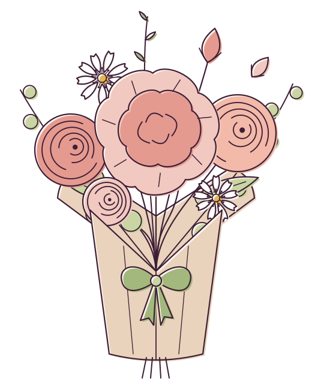
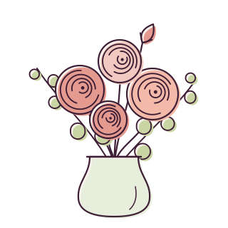
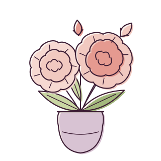
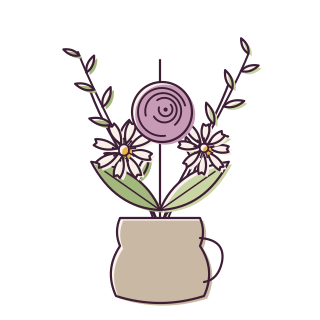
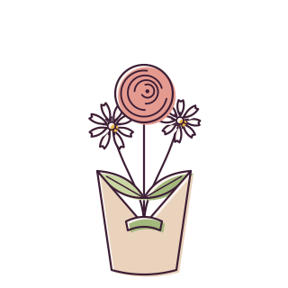
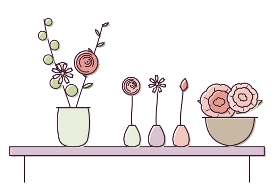
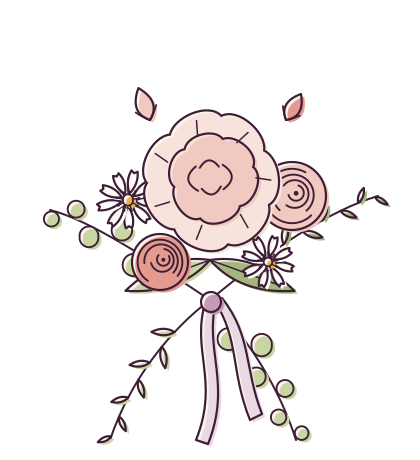
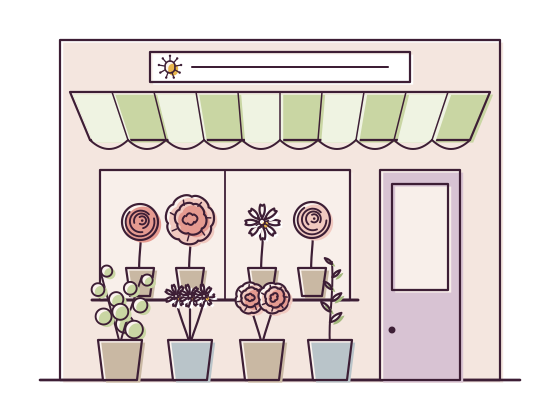

Mardi au samedi 9 h 30–19 h 30, dimanche matin
Des fleurs de saison, nouées à la main au cœur du 9e.
Renoncules d’Anjou, pivoines du Var, branchages de Bretagne : chaque matin, Mathilde compose des bouquets avec ce que les producteurs ont cueilli la veille. À emporter, à faire livrer à vélo dans le quartier ou à recevoir chaque semaine au bureau.
- Livré le jour même dans le 9e, commandé avant 14 h
- 9 fleurs sur 10 cultivées en France

Semaine du 13 octobre
Les bouquets du moment
Quatre compositions qui changent avec les arrivages. Chaque bouquet existe en trois tailles ; les fleurs peuvent varier selon la cueillette, l’esprit reste le même.
-

Le Matinal
Renoncules corail, eucalyptus rond et un bouton de rose de jardin. Frais, lumineux, parfait pour dire merci.
dès 35 €
Choisir ce bouquet -

La Joue rose
Deux pivoines d’automne, leurs boutons et un grand feuillage. Généreux, un peu romantique, très parfumé.
dès 48 €
Choisir ce bouquet -

Le Sous-bois
Cosmos blancs, renoncule prune et branchages d’olivier. Plus sauvage, qui tient bien une dizaine de jours.
dès 55 €
Choisir ce bouquet -

Le Petit Pistil
Le format de poche : trois tiges choisies, noué dans son kraft. Pour une table de chevet ou un bureau.
dès 35 €
Choisir ce bouquet
Trois tailles pour chaque bouquet : Bouquet au prix indiqué, Généreux +15 €, Spectaculaire +35 €.
Commande en ligne
Commander un bouquet
Dites-nous pour qui, pour quand et combien vous souhaitez y mettre : nous composons avec les fleurs les plus belles du jour, puis nous vous rappelons pour confirmer.
- Vous décrivez l’occasion et votre budget.
- Nous vous rappelons dans l’heure (aux horaires d’ouverture) pour valider et régler.
- Basile livre à vélo dans le 9e et ses abords, ou le bouquet vous attend à l’atelier.
Livraison : 8 € dans le 9e, 12 € dans les 2e, 8e, 10e, 17e et 18e. Retrait à l’atelier gratuit.
Bureaux, restaurants, hôtels
L’abonnement fleurs
Un accueil qui change avec les saisons, sans y penser. Nous passons chaque lundi matin, avant votre ouverture : nous reprenons les fleurs fanées, lavons les vases et installons la nouvelle composition.

-
Comptoir
45 € HT / semaine
Un bouquet généreux pour l’accueil ou le comptoir, vase prêté.
-
Salle
89 € HT / semaine
Le bouquet d’accueil et huit soliflores pour les tables. Le préféré des restaurants du quartier.
-
Grand format
Sur devis
Hall, vitrine, réception : une composition haute pensée pour votre lieu.
Sans engagement de durée, résiliable d’une semaine sur l’autre. Première semaine offerte.
Recevoir une proposition
D’avril à octobre
Mariages et événements
Nous ne prenons qu’un mariage par week-end, pour avoir le temps de bien le faire. Tout commence par un rendez-vous à l’atelier, autour d’un café et de vos photos d’inspiration.
- Bouquet de la mariée, boutonnières et couronnes
- Centres de table, arche de cérémonie, décor de la salle
- Dîners, lancements, vitrines de boutiques : petits et grands événements
- Reprise des fleurs le lendemain et compostage
Bouquet de mariée dès 120 €, décor complet sur devis. Premier rendez-vous (45 minutes) offert.
Prendre rendez-vous« Les bouquets de table ont tenu jusqu’au brunch du dimanche, et tout le monde est reparti avec une tige. »
Nos engagements
Des fleurs de saison, d’ici
Une pivoine en décembre a voyagé en avion. Nous préférons attendre mai, et vous faire découvrir entre-temps ce que chaque saison a de beau.
Printemps
Renoncules, anémones, tulipes, pivoines dès mai, branches de cerisier.
Été
Roses de jardin, cosmos, zinnias, pois de senteur, graminées.
Automne en ce moment
Dahlias, chrysanthèmes, renoncules d’automne, feuillages roux, baies.
Hiver
Hellébores, mimosa du Var, branchages, eucalyptus, fleurs séchées.

Nos producteurs
- Ferme des Trois-HaiesAnjou · renoncules, anémones, dahlias
- Serres du Clos MauveVar · pivoines, mimosa, oliviers
- Jardins de la VrilletteBretagne · feuillages, eucalyptus, hortensias
- Roseraie BergeronneLoiret · roses de jardin parfumées
- Pas de fleurs venues par avion, jamais.
- Papier kraft et raphia, aucun plastique autour des bouquets.
- Tiges et invendus compostés au jardin partagé de la rue du Fusain.
Venir à l’atelier
Horaires & accès
Ouvert du mardi au dimanche midi
| Lundi | Fermé |
|---|---|
| Mardi | 9 h 30 – 19 h 30 |
| Mercredi | 9 h 30 – 19 h 30 |
| Jeudi | 9 h 30 – 19 h 30 |
| Vendredi | 9 h 30 – 19 h 30 |
| Samedi | 9 h 30 – 19 h 30 |
| Dimanche | 9 h 30 – 13 h |
75009 Paris
Métro à quatre minutes à pied, station Vélib’ devant le square des Pastels. Une marche à l’entrée : sonnez, nous venons vous aider.
ItinéraireUne question, une envie de fleurs ?
Appelez-nous pendant les heures d’ouverture, ou écrivez : nous répondons dans la journée.